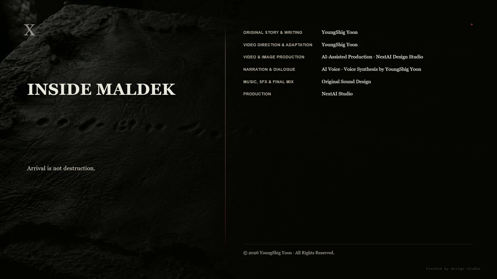

I. Open Even by Day
On the fifth day, the circle opened even in daylight.
At first, it opened once a day. By the third day it opened twice, and on the fifth it opened once at noon and once at sunset. By then, the villagers no longer stopped what they were doing when they saw it. They had learned that stopping changed nothing.
Las came down to the courtyard.
It was the first time he had stood there since injuring his left hand. The hand was still wrapped in cloth.
Las: “That isn't a weapon.”
The courtyard fell silent.
Las: “It's a survey. They aren't measuring whether we're here. They're measuring where here is. When they finish, they'll come.”
Haram: “When?”
Las: “Within five days.”
No one believed him, but no one denied his words either. After four months of silence about the sky, these were the first words he had chosen to speak.
Haram: “Why tell us now?”
Las: “I thought you wouldn't be able to bear it.”
Haram: “That's for us to decide.”
Las did not answer.
Haram was right.
Haram: “What happens when they come?”
Las: “They'll reestablish the alignment layer.”
Haram: “What does that mean?”
Las: “Every reference on this land will be reset. The underground wall, the hides you took impressions on, the stones on the ridge—they'll all lose their reference.”
It took Haram time to understand.
They would not destroy anything. They would leave everything in place and make it unreadable. Seventeen years earlier, when the sky over Maldek shifted by 0.4 degrees, every ruin on Earth had become wrong at once. This time, the same thing would be done deliberately.
Haram: “Then what do we have to do within five days?”
Las: “If there's anything you want to leave behind, leave it now.”
II. The Value Removed
That night, four people went underground.
Ara, Las, Yunseo, and Haram.
Haram had not followed them. Las had called for him.
Haram: “Why me?”
Las: “If only the two of us see it, it becomes the judgment of the two of us.”
Haram: “I don't trust either of you.”
Las: “That's why I called you.”
They carried only one torch.
The inner arrival layer of the three-layer structure was empty. Ten days earlier, twenty-four people had stood there.
Haram: “What are you trying to do here?”
Las: “I told you. This isn't a weapon.”
Haram: “Then what is it?”
Las: “A gate.”
Haram looked at the cylinder. The seam he had opened with a chisel ten days earlier was still there.
Las: “There's one value inside it. That's why it won't open now.”
Haram: “Who put it there?”
Without answering, Las sat before the seam.
To remove the value, he had to put his hand inside. He could not use his left hand. If he reached in with his right, the angle of his arm would reverse the direction of the fingertips holding the axis.
He sat there for a long time.
Ara: “Should I do it?”
Las: “Your hand can't read the specification.”
Ara: “You could tell me what to do.”
Las: “The moment I put it into words, it stops being the value.”
That was the problem with this species, and in seventeen years no one had managed to correct it.
Las put in his right hand.
It took him longer than before to find the axis.
Rene specification lines have direction. Read with the left hand, the fingertips move along the lines in their proper direction and the value enters unchanged. Read with the right, they move against it. He had to reverse what he read once inside his mind and hold it there without letting it come apart.
He had been left-handed at nineteen, when he established the specification. So he had defined the forward direction by the left hand.
What he had established was stopping him now.
0.4 degrees.
Putting it in had required only that he put it in. To remove it, he had to know what he was removing.
The cylinder turned.
III. What Opened
The inside of the arrival layer opened.
When a gate opens, no door appears. Something that was not there comes to occupy empty space. Before the four of them, the nature of the darkness changed.
The air did not move.
A gate does not bore through two places and connect them. It realizes arrival. The arrival layer here and the arrival layer there become the same place, and the load-bearing layer between them absorbs the difference. That is why pressure does not rush to one side.
The room beyond had been sealed for seventeen years. Its air had remained there for seventeen years too.
They could breathe it. It simply had no smell.
Yunseo: “Where is that?”
Las: “Maldek.”
Yunseo: “But Maldek is gone.”
Las: “The planet is gone. The fragments remain.”
They were inside one of the fragments of Maldek. On the night of the collapse, as the continent folded, a structure beneath the crust had been torn away whole. For seventeen years, that fragment had circled within the asteroid belt.
Inside it was a record room.
And that record room was paired with this structure on Earth. The two gates had been designed as a pair. That was why the Earth-side half lay buried here, built to Las's specification even though he had never built it.
Haram: “So it was yours after all.”
Las: “My method was right. It isn't mine.”
Haram: “Isn't that the same thing?”
Las: “No. That's what we're here to find out.”
IV. The Record Room
The record room was low and wide.
Like the other structures on Maldek, it had three layers. Coordinates were engraved in the outer alignment layer, the middle load-bearing layer carried the weight, and the records were inside.
The records were not documents.
The entire wall was the record. It used the same method as the wall in the eighth installment. But this wall was far older, far denser, and had one more layer.
No one had entered the room for seventeen years.
There was no dust. The air had not moved. Nothing had entered the grooves in the wall, and nothing had settled on the floor. On the night of the collapse, the room had been torn away and sealed exactly as it was.
One wall had been ripped open.
The rupture was not smooth. When the crust was torn away whole on the night the continent folded, the wall had torn with it, and the broken cross-section had hardened in place. Beyond it was the outside.
There were no stars outside.
There were fragments. Rocks large and small turned slowly in the same direction, keeping just enough distance not to collide. None of them gave off light.
Yunseo watched one of them for a long time.
Unlike the others, one side of it was curved. It was smooth and round, unmistakably made by human hands. It was the shell of a domed city.
Yunseo: “Did people live there?”
Ara: “Yes.”
Yunseo: “How many?”
Ara: “More than in your village.”
The child asked nothing more.
Yunseo stood near the wall, then stepped back.
Ara: “Can you hear them?”
Yunseo: “No.”
Ara: “Then why did you move away?”
Yunseo: “Because I can't hear them.”
Tens of thousands had entered her through the wall on Earth. Nothing entered her here. The wall on Earth had engraved what it received. This wall had determined how engraving would be done.
Las saw the fourth layer for the first time.
From the outside inward were coordinates, reception records, commands, and beneath them decision records.
It did not record what they had decided to engrave. It recorded how they had decided to engrave it.
Las read it with his right hand.
Slowly. He was reading backward, and the layers were dense. The wall on Earth had held twelve lines within a handspan. Here there were more than thirty. It was close to the limit of what fingertips could distinguish.
After about an hour, he took his hand away.
Ara: “What does it say?”
Las: “A method for reducing many arrivals to one.”
Ara: “Is that all?”
Las: “That's all. And beneath it is the place where that method was decided.”
V. Two Imprints
At the end of the decision record were two imprints.
They were not names. They were not signatures. They were impressions made by pressing hands into the wall and letting it harden around them.
One lay inside the specification lines. The angle between the fingers, the area touched by the palm, and every point where force had been applied had been converted into values and engraved around it. It was the Rene way.
The other lay outside the specification lines. Nothing had been converted. Only the imprint remained. Beside it, a small piece of unworked mineral had been set into the wall.
It was the Chiwoo way.
The two imprints stood side by side. They did not touch.
Ara stood before them for a long time.
Ara: “How old are these?”
Las: “Older than us. Much older.”
Ara: “Then whose hands were they?”
Las: “There are no names. It isn't that they chose not to leave them. This layer has no place for names.”
The two handprints did not belong to any named individual. When the two species reached their first agreement, one person from each had pressed a hand there. The wall did not say who they were.
Ara: “No one forced them.”
Las: “No. They decided together.”
The reason the war happened was there.
The Chiwoo perceive many. The Rene engrave one. For the two species to build anything together, they needed a procedure that would reduce many to one, and the two species had agreed on that procedure.
Because the agreement existed, the gates worked. Because the gates worked, the two species could arrive in each other's worlds. And because they could arrive, a civilization arose.
The same procedure was applied to warnings of danger.
Tens of thousands of different dangers were reduced to one direction. That direction was engraved on the wall. What was engraved became a command.
No one betrayed anyone.
No one lied.
The agreement that taught the two species how best to use each other broke both their worlds.
Haram: “Then no one did anything wrong?”
Las: “Someone did.”
Las: “The people who decided to reduce.”
Haram: “Who were they?”
Las pointed to the two imprints.
Then he stood there for a long time.
For seventeen years, he had reduced what he had done to a single account. He had received the order. He had been able to erase the value. He had chosen not to. That had been the resistance available to him.
Before this wall, that account collapsed.
Leaving 0.4 degrees in place had not taken him outside the specification. It had been the only thing the specification allowed him to do. He had not broken the specification. It was not that he had not known how to break it. He had never considered that it could be broken, because the hand that established it had been his own.
Las: “I didn't resist.”
Ara: “Then what did you do?”
Las: “I deviated only as far as the specification allowed. That isn't resistance. It's error.”
Ara did not argue.
She had an account of her own. Twisting the axis had been defense. She had done it to delay the deaths of tens of thousands. It had delayed them, and in that time the survivors had reached orbit.
But that twist had thrown off Las's aim.
Four shots had missed the exact center of the core. That was why the planet had folded instead of exploding. Had the shots struck dead center, Maldek would have shattered. A shattered planet has no folded continents and no blue fissures.
Ara: “I saved those people.”
Las: “Yes.”
Ara: “And I folded that planet.”
Las: “That too.”
They did not comfort each other there.
VI. Sending
Las stepped away from the wall and looked deeper into the room.
Across from the torn wall stood a low platform. The record room was not only for recording. Every gate on Maldek had to be able to pass what it engraved to another gate, and this was where that was done.
Las: “We have to leave this.”
Ara: “For whom?”
Las: “Anyone. Whichever side remains.”
Haram: “You said they're coming in five days. Aren't you thinking of running?”
Las: “Running won't erase that.”
Haram: “Then why not leave it as it is?”
Las: “Because if we do, they'll establish a new reference.”
Once the reference was reestablished, the wall would remain exactly where it was, but no one would be able to read it. The place indicated by the coordinate layer would cease to exist, and no one would know what the values in the decision layer were values of.
It was more certain than destruction. What is destroyed leaves evidence of destruction. A changed reference leaves no trace at all.
Las: “In five days, this will still be here. No one will be able to read it.”
Haram: “So if we don't do it now, it's gone forever?”
Las: “Yes.”
Four months earlier, Las had decided not to write, because writing would turn everything into one. Ten days earlier, he had decided not to speak, because speaking would require choosing.
This time was different.
Las: “We can send it without summarizing.”
Ara: “Can that be done?”
Las: “No. That's why no one has ever done it.”
The transmitter in the record room compressed values before sending them. Compression is reduction. To send them without reducing them, they would have to force tens of thousands through as tens of thousands.
A Rene device could not do that.
A Chiwoo could.
Ara: “I can put in everything I carry.”
Las: “If you put in everything, nothing will remain inside you.”
Ara: “I know.”
She had held them for seventeen years. Even as she severed them one by one in the underground resonance chamber on the Moon, there were things she had refused to release: the final calculation of someone trapped in water, the direction of a hand pushing a child, a song a mother had sung.
There were tens of thousands.
Haram: “Isn't there another way?”
Ara: “There is. We could reduce them.”
Haram asked nothing more.
Ara placed her hand on the wall.
Yunseo stood beside her. The child did not touch it. Ever since she had turned away in the courtyard ten days earlier, she had known what she had chosen not to do. Today, too, she kept that choice.
Yunseo: “Should I help?”
Ara: “If you do, it will remain inside you too.”
Yunseo: “Can't it remain?”
Ara: “You don't know how to let go yet.”
Ara closed her eyes.
She could not send them one by one. Sending them one by one would create an order, and an order would give different weight to what went first and what came later. A difference in weight would also be a form of reduction.
She had to release them all at once.
For seventeen years, Ara had lived only by holding them. She had never made the motion of letting go.
She opened the hand with which she had been holding them.
Tens of thousands went out at once. Because they went unreduced, the signal was vast. If a compressed signal was a single strand of thread, this was a tangled mass.
As they left, Ara passed each of them one final time. Or rather, they passed through her.
The calculation of someone trapped in water.
The direction of a hand pushing a child.
The words that the southern gate was still open.
The song her mother had sung.
When the song passed, she nearly closed her hand again.
She did not.
The record room resonated.
The signal went in two directions. One went underground on Earth, into the matching structure. The other went outward.
Outside was not narrow.
VII. The One Sentence That Remained
Ara did not open her eyes.
Even after the signal ended, she remained with her hand against the wall. Las called her name, and Haram touched her shoulder, but she did not respond.
To be empty did not mean to feel nothing.
For seventeen years, Ara had confirmed herself by distinguishing her thoughts from the thoughts of others. There is this much of them, and beyond it is me. It was the only way she knew herself.
When the others were gone, she could no longer tell where the beyond began.
Yunseo stepped forward.
The child lifted Ara's hand from the wall and placed her own hand where it had been.
Four months earlier, Ara had placed one of her memories inside the resonance network to draw the child out. Yunseo had been able to hold it because it was not her own.
Now it was the opposite.
Yunseo had no memory to give Ara. All a thirteen-year-old possessed was the path she walked to fetch water, her younger sibling's hand, and the twenty utterances she had heard the previous autumn.
The child did not give her any of them.
Instead, she kept her hand where Ara's hand had been and remained still. She was not giving Ara something to hold. She was marking the place where something to hold had once been.
Ara opened her eyes.
Ara: “It was you.”
Yunseo: “I didn't give you anything.”
Ara: “I know.”
The four of them returned through the gate. Las came out last and put 0.4 degrees back into the alignment core. The gate closed.
It was dawn when they reached the surface.
A circle stood open in the sky.
This time it did not close.
The rim grew thicker. The circle widened. A second circle opened beside it. Then a third.
The measurement was not complete. They had caught the signal.
Five days became one.
Haram: “You called them.”
Las: “Yes.”
Haram: “You sent it knowing that?”
Las: “I sent it knowing.”
Haram looked at the sky. Ten days earlier, he had believed these people were calling the sky. He had been wrong then. Now he was right.
But now he knew why they had called it.
He did not go down to the village.
To go down and speak, he would have to reduce. There was no way to explain four layers, two handprints, and tens of thousands in the courtyard. The moment he opened his mouth to try, it would become one sentence again within seven days. They are calling the sky. This time the sentence was true, and because it was true, it was worse.
He sat beside the underground entrance. From inside his clothes, he took out one hardened hide. It was the last of the impressions he had taken from the wall ten days earlier that he had not yet placed in the village record room.
He meant to write something on it.
What he had seen in the record room had four layers: coordinates, reception records, commands, decisions. And two handprints.
To put all of that on this hide, he would have to reduce it.
Haram knew that now. He had learned it that morning.
He sat for a long time, then wrote only one sentence.
Arrival is not destruction.
After writing it, he looked at the sentence.
This too was a reduction. He had reduced four layers, two imprints, and tens of thousands to a single sentence. He had just done the thing he had only just learned to recognize.
He did not erase it.
If he erased it, nothing would remain. If he left it, it would remain wrong. What remains wrong will someday be found by someone who discovers how it is wrong.
Haram folded the hide and put it back inside his clothes.
A fourth circle opened in the sky.
The sentence remained for a long time.
It traveled when the village moved. The next generation transferred it to what they called paper, and the generation after that transferred it again. Each time, they took an impression by pressing it. Each time, one character shifted out of place.
Thousands of years later, a proofreader would receive the sentence.
He would call it a misprint.
And he would not correct it.
